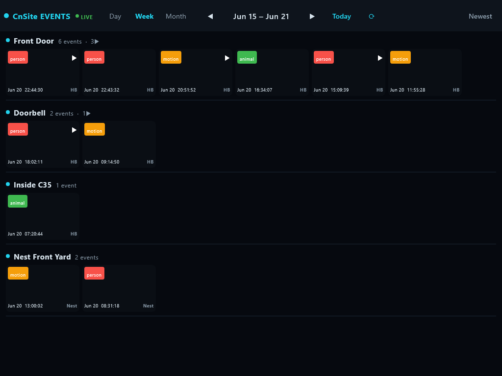
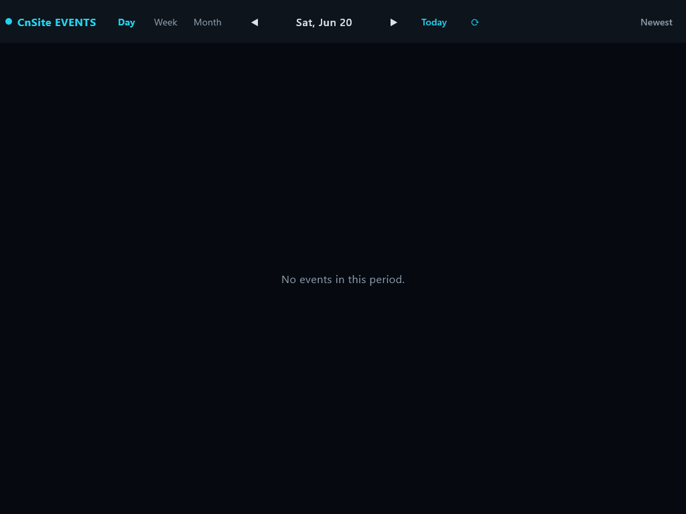
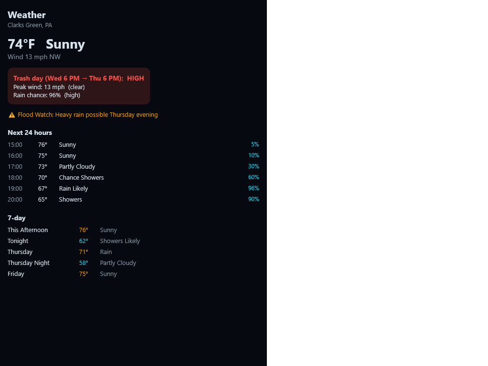

A local, production-grade smart-home hub built as a client–server system in Kotlin Multiplatform + Compose Multiplatform — a standalone Kotlin service plus thin Compose clients for Windows 11 and Android wall tablets. Migrated off a customized Home Assistant / Python setup; it owns device control directly (no HA Core).
A per-camera history browser: each camera gets a full-width lane; a Day / Week / Month period control navigates the timeline; events render as a wrapped grid of thumbnails with type badges (person · animal · motion), clip markers, timestamps, and capture-source labels. The same UI runs on the Windows desktop (admin) and the Android wall tablets (locked-down kiosk).

/img endpoint when running live.
Capture is real-time and server-driven: the service subscribes to Eufy motion/person/pet
events directly (no Home Assistant), writes the HomeBase thumbnail to the archive, and
broadcasts the new event over a WebSocket (/api/events/ws). Every connected client —
the Windows admin and the Android kiosks — inserts it into the right camera lane instantly, no
refresh. Verified end-to-end: real Eufy + Nest captures arrived as live frames the moment they were
written. The clients hold only a URL + token; the service owns the storage, devices, and the stream.
A dedicated Weather screen, ported from the trash-day utility — fed live by the service from the US National Weather Service (no API key). Current conditions, the trash-day pickup-window risk (wind / rain severity), active alerts, plus 24-hour hourly and 7-day forecasts.

/api/weather payload.A Cameras tab shows a live wall — one tile per camera, auto-refreshing. Nest
cameras stream a live WebRTC frame via go2rtc; Eufy battery cameras show the latest HomeBase
event frame (they don't stream continuously without waking P2P). Verified live against the daemons:
the service grabs real frames (Nest ~145 KB live JPEG, Eufy ~13 KB HomeBase thumb) on
/api/snapshot. The wall renders in-app (run the desktop or tablet client to see it).
Headless Kotlin service — the single owner of storage, device connectivity, security, and the API. Always-on on the Windows node.
SQLDelight event index + a day-partitioned media
store (/events/<day>/<cam>/…); per-camera lane queries.
Direct capture: eufy-security-ws (WebSocket, HomeBase thumbnails) + go2rtc (Nest WebRTC frames). No HA Core.
Thin Compose client (Windows + Android). Renders + commands only — no local DB or device logic. Admin on Windows, viewer on kiosks.
The screen is split into a stateless LanesContent that renders from a fixed
LaneSet, so UI tests assert layout + reactivity with zero network or hardware. Tests
use semantic testTags and run on both desktop and Android. The desktop runner also captures
the screenshots above offscreen (no display needed) — they double as visual-regression baselines.
./gradlew :composeApp:desktopTest # shared UI assertions + screenshot capture (Windows JVM) ./gradlew :composeApp:connectedAndroidTest # same assertions on a connected tablet